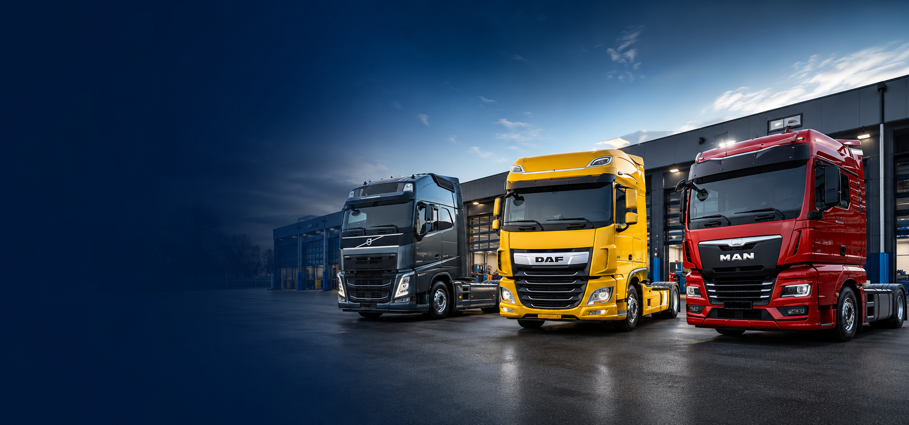
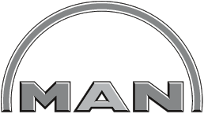
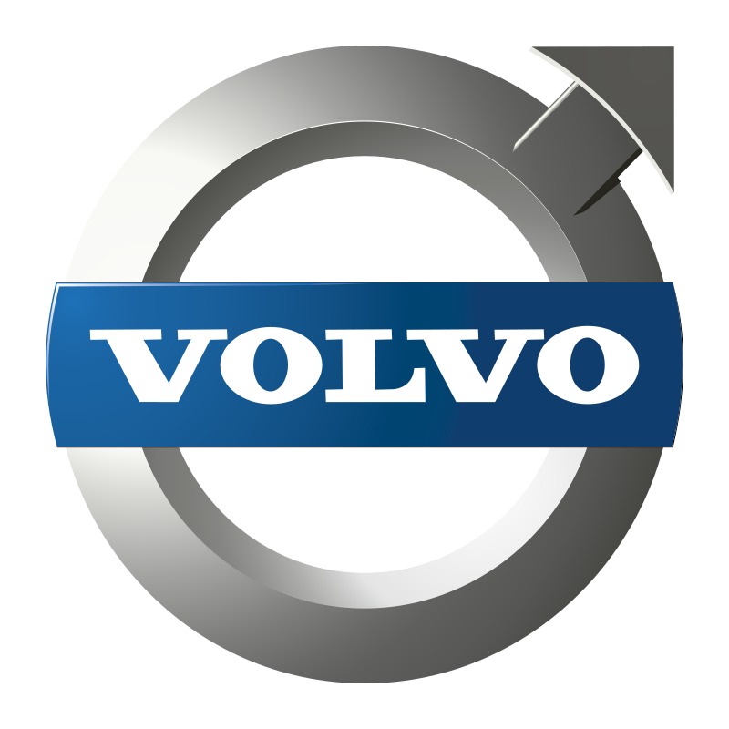
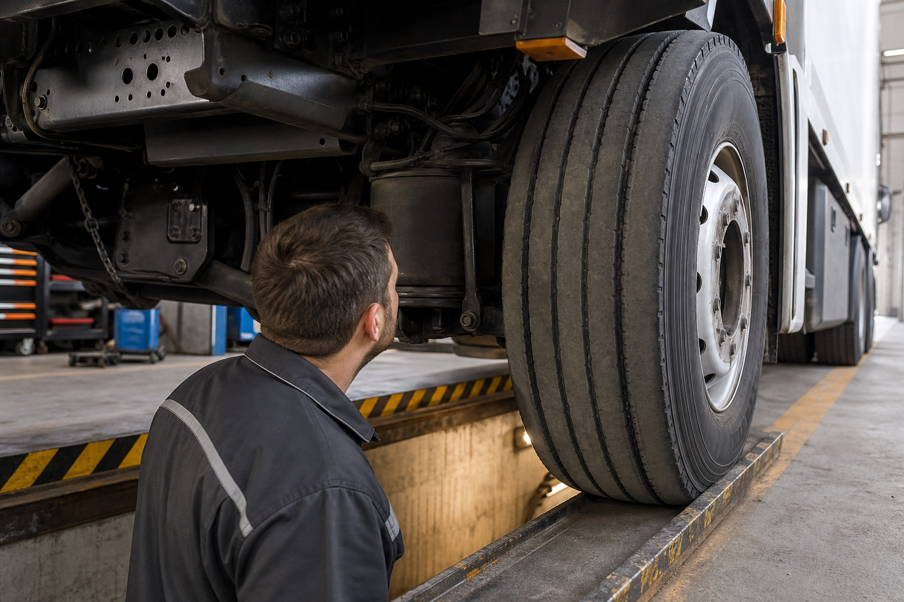
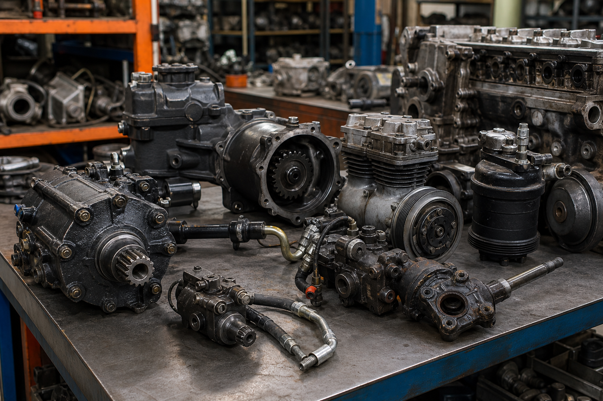
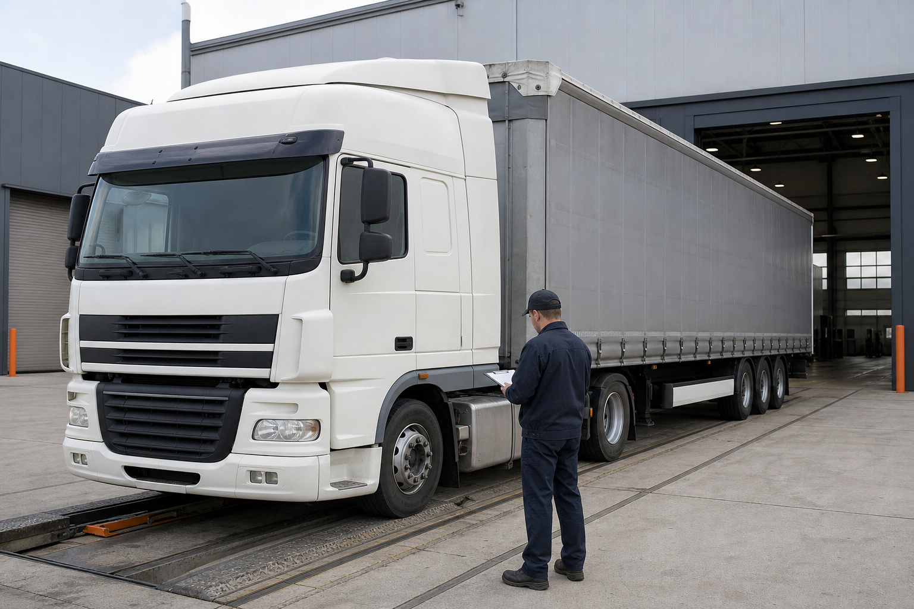

Ремонт вантажних автомобілів
Огляд, узгодження робіт і ремонт вантажної техніки у сервісній зоні.
Детальніше
TIR СТО ДНІПРО
Ремонт вантажних автомобілів
м. Дніпро

Працюємо з приватними клієнтами, компаніями та автопарками. Точний перелік робіт і можливість ремонту визначаються після огляду або діагностики.
Термінові звернення приймаються телефоном, можливість виїзду погоджується.
Ходова частина, двигуни, гідропідсилювачі керма, компресори.
Розбірка і запит доступних запчастин без вигаданого каталогу та цін.

1 СТО Дніпро TIR спеціалізується на ремонті та обслуговуванні вантажних автомобілів, тягачів, причепів, напівпричепів і спецтехніки у Дніпрі.
Використовуємо лише підтверджений перелік послуг. Не показуємо ціни без огляду техніки.
Огляд, узгодження робіт і ремонт вантажної техніки у сервісній зоні.
ДетальнішеРоботи з ходовою частиною після діагностики та погодження обсягу.
ДетальнішеПеревірка несправностей двигуна і ремонт за результатами огляду.
ДетальнішеРемонт гідропідсилювачів керма для вантажної техніки.
ДетальнішеРоботи з компресорами після уточнення технічного стану.
ДетальнішеРемонт причепів і напівпричепів для приватних клієнтів та компаній.
ДетальнішеЗварювальні роботи за погодженим переліком після огляду.
ДетальнішеСлюсарні роботи для вантажного транспорту та причіпної техніки.
ДетальнішеДопомога у Дніпрі та області після уточнення місця і несправності.
ДетальнішеДля термінового звернення зателефонуйте або напишіть у Viber. Повідомте місце поломки, марку та модель, тип транспорту і чи може автомобіль рухатися самостійно.
Уточнюйте наявність вузлів, агрегатів і деталей телефоном. Для перевірки запчастини повідомте модель, рік, VIN або номер деталі та за можливості надішліть фотографію.

СТО працює з компаніями та автопарками. Умови обслуговування погоджуються індивідуально.

Зображення підготовлені як реалістичні placeholders і легко замінюються на реальні фото СТО.
Короткі відповіді на питання, які найчастіше виникають перед дзвінком або повідомленням у Viber.
Обслуговуємо вантажні автомобілі, тягачі, причепи, напівпричепи і спецтехніку. Основні марки: DAF, MAN, Volvo, Iveco, Scania. Можливість ремонту інших марок уточнюйте телефоном.
Так, ремонт причепів і напівпричепів входить до підтвердженого переліку послуг.
У Дніпрі та Дніпропетровській області. Інші міста розглядаються в окремих випадках після попереднього погодження.
Так, можливі робота за договором, безготівковий розрахунок, ПДВ і обслуговування автопарків.
Гарантія залежить від виду ремонту та погоджується після визначення обсягу робіт.
Готівка, банківська картка, переказ на банківський рахунок і безготівковий розрахунок для компаній.
Зателефонуйте або надішліть запит із моделлю, роком, VIN, номером деталі та фото, якщо воно є.
Зателефонуйте за основним номером або напишіть у Viber. Якщо Instagram URL буде додано в конфігурації сайту, кнопка Instagram Direct з'явиться автоматично.
Канали звернення: телефон, Viber та Instagram Direct після додавання URL у конфігурацію. Форми на сайті не використовуються.